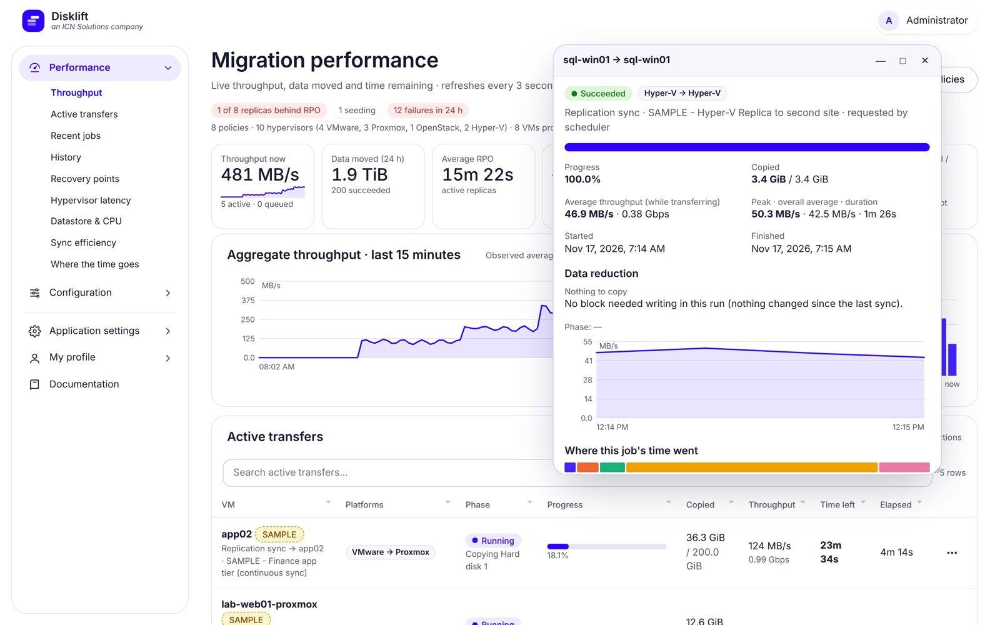
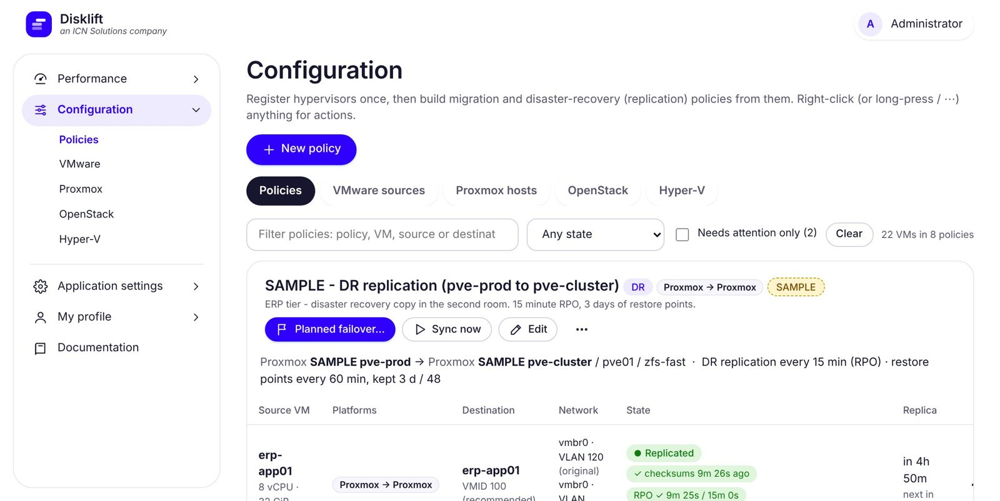

Move VMs between hypervisors, then keep them protected
Disklift copies running VMs from VMware, Hyper-V and OpenStack to Proxmox, agentless and block by block. The same appliance replicates them for disaster recovery, with restore points and test failover.

Supported migration and DR paths
Not just VMware to Proxmox. Every source and destination pair Disklift supports today.
| Source | Destination | Migration | Disaster recovery |
|---|---|---|---|
| VMware (vCenter or ESXi) | Proxmox | Yes | Yes: continuous sync, failover, test failover, failback |
| VMware | VMware (another ESXi host) | Yes | Not yet |
| OpenStack Beta | Proxmox | Yes | Yes: continuous sync, failover, test failover (no failback to OpenStack) |
| OpenStack Beta | OpenStack (another endpoint) | Yes: first copy, continuous sync, cut-over | Not yet |
| Hyper-V | Proxmox | Yes: first copy, repeat syncs and cut-over, with change tracking | Yes: continuous sync, failover, test failover (no failback to Hyper-V) |
| Hyper-V | Hyper-V (another host) | - | Orchestrates Hyper-V's own native Replica: initial sync, test, planned and unplanned failover, reverse, health |
| Proxmox | Proxmox (another node or cluster) | Yes | - |
Beta marks paths that are built and covered by automated tests against simulated environments, and are still being proven on live infrastructure.
How a move works
You choose how each source is read, then Disklift handles the copy and the cut-over.
Connect your hypervisors
Add vCenter or ESXi, Hyper-V hosts, OpenStack endpoints and Proxmox nodes. Credentials are encrypted at rest.
Build a policy
Group VMs with their own schedule, bandwidth cap and retry behavior, and map source networks to target networks.
Copy while the VM runs
Online mode keeps the VM in production. A snapshot freezes the disks and changed-block tracking ships only what changed.
Cut over
Optional graceful shutdown of the source, a final sync, checksum verification, then the new VM powers on. The original is kept until you delete it.
Prefer a cleaner copy? Offline mode shuts the VM down first. For VMware you can also keep a thin, powered-off safety clone of the original, made before cut-over. Destination space is checked before a copy starts.
What you get
One appliance for the move and for the protection that follows.
Agentless, block-level copy
Nothing to install in the guest. VMware over the vSphere API, OpenStack over API and SSH with Ceph, LVM or NFS back ends, Hyper-V from a checkpoint.
Thin copy and changed blocks
After the first copy, only changed blocks cross the wire. Empty blocks are skipped. Savings are shown per job and on the dashboard.
Optional compression and deduplication
Per-policy zstd compression and block deduplication, both off by default. Every local copy is read back and checked, and anything doubtful is sent normally.
Scheduling and policies
Per-policy schedules, bandwidth caps and retries. Cut-overs and failovers always go first, and sync times are spread out so hundreds of VMs never come due at once.
Disaster recovery mode
Keep replicating after cut-over: continuous sync, point-in-time restore points, test failover without touching the production replica, and RPO tracked live with a breach alert.
Live performance dashboard
Throughput, jobs per hour, savings and job health, with history out to 90 days. Average RPO and RTO come from real measurements, with a per-job phase breakdown to the millisecond.
Hypervisor latency, measured honestly
VMware datastore latency and queue, Hyper-V disk latency and queue, Proxmox CPU and I/O wait. If a platform has no counter, Disklift shows none instead of inventing one.
Security by design
Role-based access, two-factor sign-in with any TOTP app, a full audit log, encrypted credentials with rotatable keys, and pinned TLS and SSH host keys. Passwords are never written to logs.
Built for large estates
Add worker capacity with a single command, get a queue-wait alert before recovery targets are at risk, and let running jobs finish cleanly across restarts and upgrades.
Operations-ready
Health checks for every service, forwarding to up to five syslog servers, automatic cleanup of old history, and warnings before the appliance disk fills.
Signed upgrades
Upgrades are signature-checked before anything is installed, with a backup first and a self-test afterward. Releases are only offered to licensed installations.
Test it on your own workload
Run in evaluation mode first. A licence, per protected seat for DR or for migration, lifts the evaluation limits.
See it working
Screens from the current release.
Live transfer detail
Watch throughput, progress and bandwidth for every job as it runs.

Policies for moves and DR
Map sources to targets once and reuse the policy.

Admin settings
Users and roles, two-factor status and appliance settings in one place.

Download Disklift
Free to download and run in evaluation mode. The download page has the VMware and Proxmox appliances, with deployment steps.
Support and contact
Questions before you buy, or help after you install.